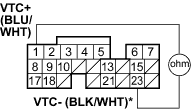
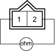
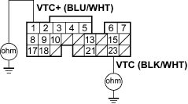

DTC P0010: VTC Oil Control Solenoid Valve Malfunction
NOTE: Information marked with asterisk (*) applies to VTC-line.
- Reset the ECM (see page 11-4).
- Start the engine. Hold the engine at 3,000 rpm with no load (in park or neutral) until the radiator fan comes on, then let it idle.
Is DTC P0010 indicated?
YES - Go to step 3.
NO - Intermittent failure, system is OK at this time. Check for poor connections or loose wires at the VTC oil control solenoid valve and at the ECM. 
- Turn the ignition switch OFF.
- Disconnect the ECM connector B (24P).
- Measure resistance between ECM connector terminal B1 and B23*.
ECM CONNECTOR B (24P)

Wire side of female terminals
Is there 6.75 - 8.25 ohms?
YES - Go to step 10.
NO - Go to step 6.
- Disconnect the VTC oil control solenoid valve 2P connector.

- Measure resistance between VTC oil control solenoid valve 2P terminal No. 1* and No. 2.
VTEC OIL CONTROL SOLENOID VALVE 2P CONNECTOR

Terminal side of male terminals
Is there 6.75 - 8.25 ohms?
YES - Go to step 8.
NO - Repair the VTC oil control solenoid valve.
- Connect VTC oil control solenoid valve 2P connector terminals No. 1, No. 2 and body ground with a jumper wire individually.
VTEC OIL CONTROL SOLENOID VALVE 2P CONNECTOR

Wire side of female terminals
- Check for continuity between ECM connector terminal B1, B23 and body ground.
ECM CONNECTOR B (24P)

Wire side of female terminals
Is there continuity?
YES - Go to step 10.
NO - Repair open in the wire between the ECM (B1, B23*) and the VTC oil control solenoid valve.